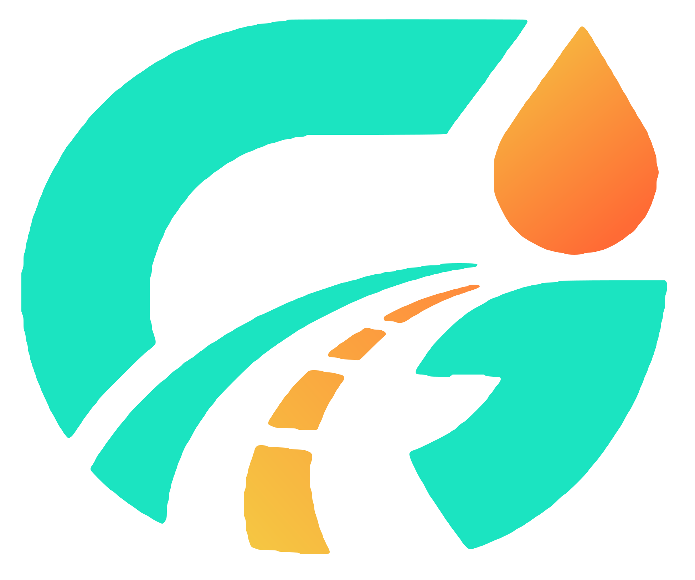

Pas de connexion
GODAC Livreur a besoin d'internet pour charger votre tournée. Vérifiez la 4G ou le Wi-Fi puis réessayez.

GODAC Livreur a besoin d'internet pour charger votre tournée. Vérifiez la 4G ou le Wi-Fi puis réessayez.